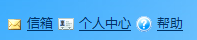
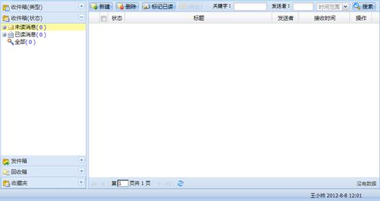
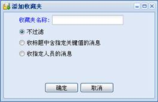

信箱是项目人员之间相互交流，信息交互的平台。项目存在任务变更或者任务风险、配置管理出现变化时都会以邮件的方式提醒项目人员。
用户登录系统后，在主页侧边栏点击“信箱”链接或点击各个模块界面功能辅助区的“信箱”链接即可以进入信箱页面，如下图所示：

图 信箱入口1
图 信箱入口2
信箱主界面如下图所示：

图 信箱主界面
1、新建消息
（1）点击工具栏的“新建”按钮新建消息。
（2）在消息列表中点击“发送者”一列的来新建消息，新建消息收件人自动获取所选消息的发送者。
（3）在整个项目管理系统中，在任意出现消息图标的位置，点击该图标即可创建新的消息，新建消息收件人自动获取所选消息的发送者。
注意：
1、新建消息界面的收件人、抄送、密送都可以选择一个或多个人。
2、存草稿时可以不选择收件人，但主题必须得填写。
3、草稿可以在消息分类过滤区发件箱的“未发送”中查看到。
2、查看消息
在消息列表中点击消息标题的链接或点击消息右键菜单的“消息内容”即可查看消息内容。
注意：未发送的消息即草稿，通过单击标题的链接或草稿右键菜单的“编辑草稿”或操作区的“编辑”查看和编辑消息。
3、删除消息
（1）删除一条消息：在消息列表中选择一条消息，通过工具栏的“删除”按钮或右键菜单的“删除消息”或操作区的“删除”删除。
（2）批量删除消息：在消息列表在选择多条消息，通过工具栏的“删除”按钮删除。
注意：删除的消息在“回收箱”中显示，要彻底删除该消息还要在回收箱中删除一次。
4、标记已读
在消息列表中选择一条或多条未读消息，通过工具栏的“标记已读”按钮将其变为已读状态。
5、转发消息
在消息列表中选择一条消息，点击右键菜单的“转发消息”或消息内容界面的“转发”按钮转发。
注意：系统消息不能转发，其中消息过滤分类区“收件箱（类型）”中“任务变更”、“任务风险”、“配置管理”、“其他”的消息都属于系统消息。
6、回复消息
在消息列表中选择一条消息，点击消息内容界面的“回复”按钮回复。
注意：系统消息不能回复。
工具栏右侧为消息搜索功能按钮和搜索条件选择区。消息的搜索条件有“关键字”、“发送者”和“消息发送时间”，用户可以按其中一个或多个条件组合搜索。
收藏夹可以自动收藏符合过滤条件的新消息。
1、添加收藏夹
点击工具栏的“添加”按钮添加。收藏夹按过滤条件可以分为三种，添加如下图所示：

图 添加收藏夹
（1）不过滤：不含过滤条件，可以将消息分类过滤区中的消息拖拽到该收藏夹中。
（2）收标题中含指定关键值的消息：添加收藏夹时填写指定的字符，如果我接收到的消息的标题中含有指定字符，那么该邮件就在该收藏夹中显示。
（3）收指定人员的消息：添加收藏夹时填写指定人员，如果我接收到的消息是该指定人员发送的，那么该邮件就在该收藏夹中显示。
注意：如果发送的消息既含有指定字符，又含有指定人员，那么该消息在最后添加的符合条件的收藏夹中显示。
2、修改收藏夹
选择一个收藏夹，通过工具栏“重命名”按钮修改名称，不可修改过滤类型和过滤内容。
3、删除收藏夹
选择一个收藏夹，通过工具栏的“删除”按钮删除。
注意：删除的收藏夹中的消息可以在回收箱中查看。